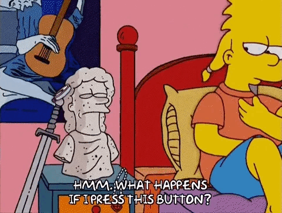

Tiempo objetivo: {{tiempoObjetivo}}
{{ tiempoActual.toFixed(1) }} segundos
¿Podrás detener el cronómetro?
{{mensajeResultado}}
Score: {{score}}
Perdiste
Score total: {{score}}
{{mensajeResultado}}
REGLAS DEL JUEGO
En el juego "Detener el Tiempo", el tiempo objetivo inicia en 5 segundos y aumenta 5 segundos en cada ronda. Comienzas con 3 vidas. Si te pasas del tiempo objetivo por más de 1 segundo, perderás una vida. Ganarás 5 puntos por detener el tiempo exactamente, 2 puntos si la diferencia es menor a 0.5 segundos, y 1 punto si es menor a 1 segundo.